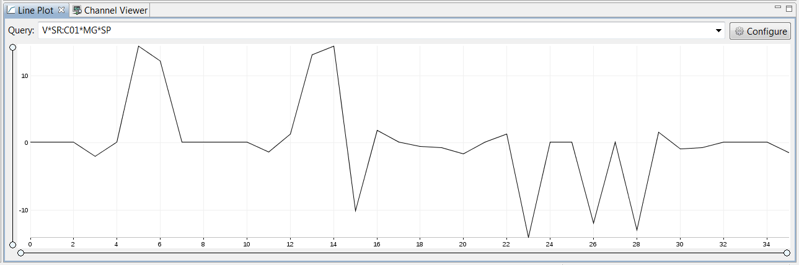

Index:
The default option, the channels are arranged by the index of the channel in the result of the CF query. Other options includeRange:
Specify an offset and increment.Property:
The channels are sorted based on the value of the selected property.Channel Query:
This will result in a correlation plot between the channels returned by the two queries.
ChannelLinePlot used to display a waveform

ChannelLinePlot used to display all the magnet setpoints from cell1 from the the virtual ioc
